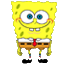
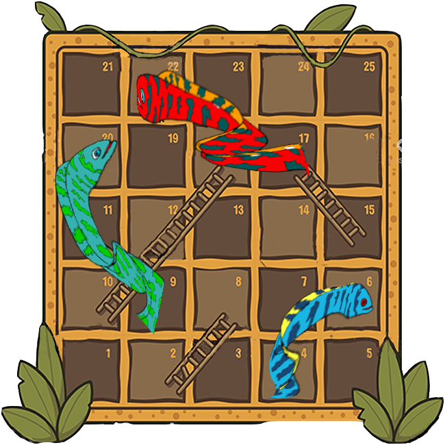

Anguilas Y Escaleras

Posición:
Posición:
Jugador 1
Tirar

Jugador 2
Tirar
Portada
UNIVERSIDAD AUTÓNOMA DE NUEVO LEÓN
FACULTAD DE ING. MECÁNICA Y ELÉCTRICA
PENSAMIENTO CREATIVO
MAESTRO: ENRIQUE VALDÉS PÉREZ
JUEGO DE MESA “ANGUILAS Y ESCALERAS”
EQUIPO 5
Reyna Azeneth Gamboa Méndez 1753257
Luis Gerardo Garza Reyes 1798332
David Pacheco Valdez 1794049
Oliver Pérez Gutiérrez 1768007
Aaron Fernando Rosales Saucedo 1791860
Gustavo Adolfo Sánchez Torres 1796047
Instruciones
Iniciar Test
Siguiente pregunta
Respuesta correcta:
0
Respuesta incorrecta:
0
Tiempo
10
segundos